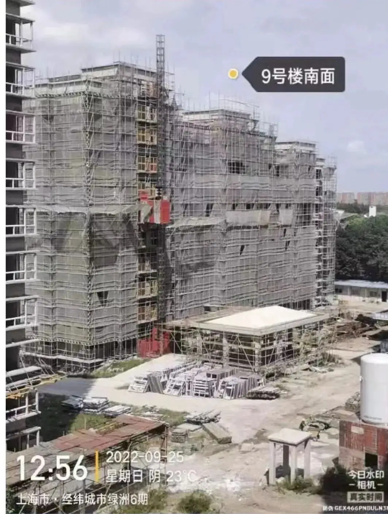
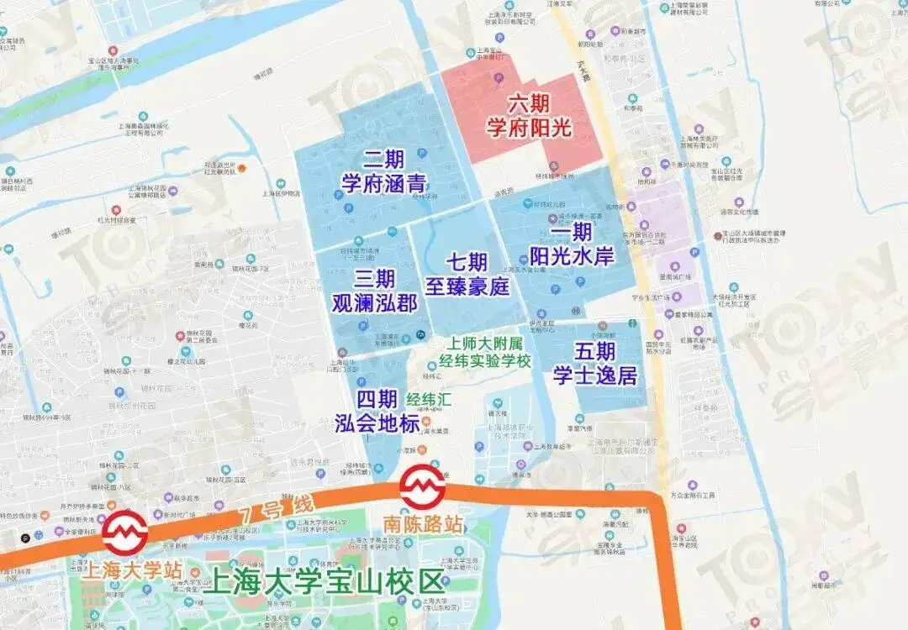
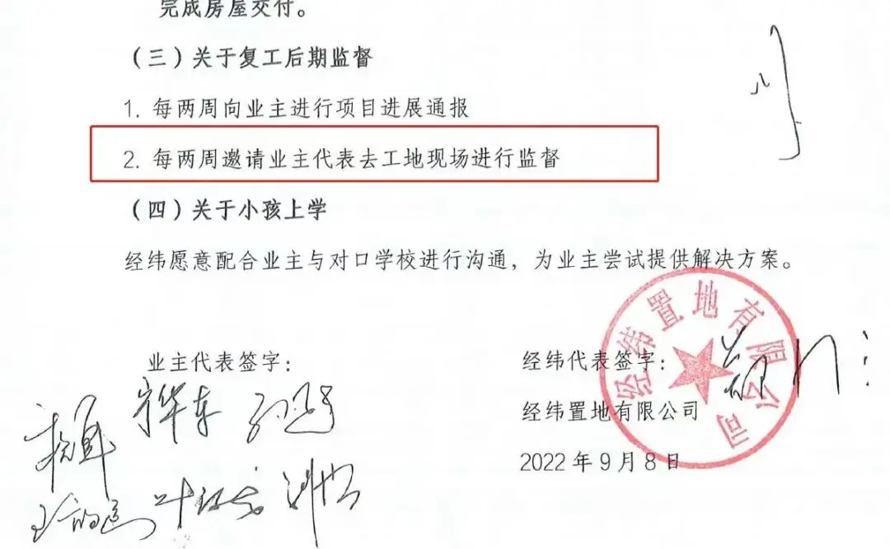
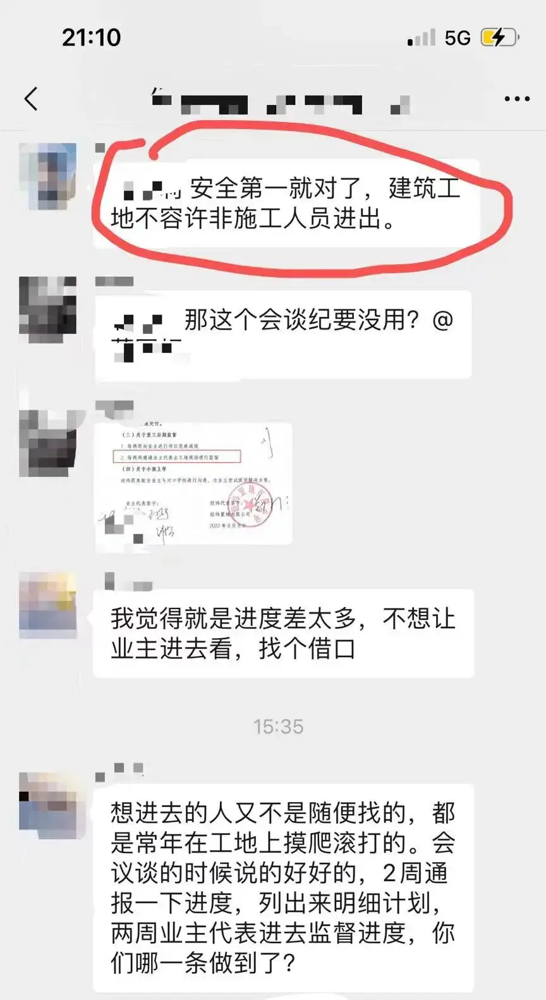
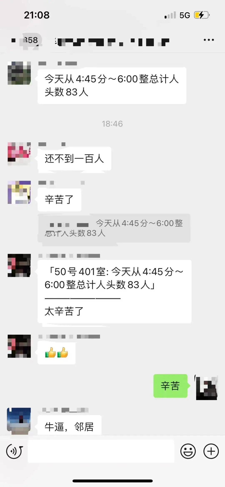
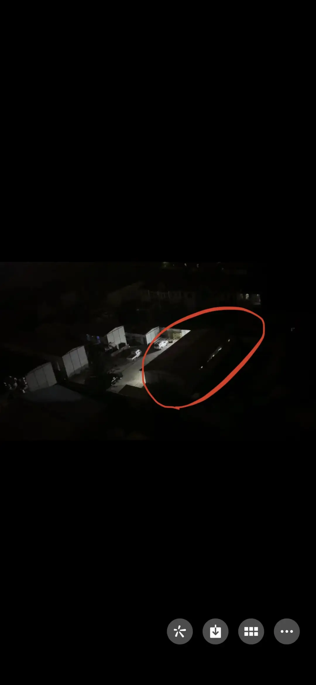

今天。
距离政府相关监管部门人员出面协调。
已经过了整整一周。
工地上，工人似乎比以前多了。
动静也大一些了。

但是，只要是个明眼人就知道。
距离真正的全面复工，还需要一段距离。

△经纬学府阳光位于宝山中环旁上大板块，该区域为上海市五大重点转型区域之一，同时也是宝山建设上海科创中心主阵地的核心承载区之一，开发商为经纬置地有限公司，该楼盘总价在500-600万，均价为5.72万/㎡，自去年11月停工至今年9月初，9月经纬盖公章、总经理签字答应9月15日后实现全面复工，却迟迟未兑现承诺
慢慢地，业主不安的情绪再次泛起。
毕竟，大家已经经历过太多次的谎言和背叛。
已经出现了创伤应激反应。
于是，业主代表请求。
经纬开发商能够按照约定，可以让业主本周进场勘查，一探究竟。

可没有想到的是。
在政府出面协调后，开发商竟然还在耍赖，一再拒绝业主合理合法的请求。

△截至目前，经纬依旧未答应业主本周查看的请求，只是同意十一假期之后让业主去看。
这更加剧了业主们的不安。
甚至有些绝望。
我们不知道开发商这样做，到底要隐藏什么。
眼前，我们面对似乎是一个我们永远都难以看懂的黑盒子。
人因未知而恐惧。
被安抚好的业主，再一次走入情绪低谷。
一位业主于是自发，在4点多的时候就在工地门口蹲点。
从4:45到6:00，就蹲在那里，怀着既期待又忐忑的心情。
心里默默点着下班回家的工人。
那样子，像是在盘点着自己的全部家当，生怕数错一个人。
一共83人。
从人数上，距离真正的复工有不小的差距。
以这样的人员配置，去追回已经延误的工期，几乎是不可能的。
面对这样的结果。
我内心，也是无奈的。
想到那位业主蹲在门口的样子，觉得好心酸。

就为了一个人头数，他在那蹲站了一个多小时。
也正是这位业主的举动，让我忽然想通了一件事。
从我们6月wq，一路走到现在，我们到底在争什么？？
7月初，第一次。
我们去开发商那里，为的是他能向我们交底，到底为什么项目停工。
8月份底，经纬承诺的事情没有办到。
9月份我们不停的投诉，不停的xf。
我们为的是什么，我们是想知道，从我们6个口袋拿出去的，专门用来建造我们房子和希望的钱还在不在？
为了这个信息
业主们发了狂的找开发商、监管银行、政府一次又一次地去求证。
无人机、拍照、数人头、向保安打听消息......

△业主刚才通过晚上工地上宿舍亮灯的情况判断开工情况
一切的一切，只是为了知道我们的钱还在不在。
我们的房子还在不在建造。
就这么简单。
是的，一路奋战，我们争的只是四个字：信息公开。

这对于阳光政府来说，只是举手之劳。
期房，作为一个国家有着明确监管规则的售卖形式。
如果严格按照监管制度规则来执行，不可能会存在烂尾楼。
但是这套制度在执行中，因为缺乏信息透明机制，导致缺乏监督，反而滋生了很多腐败和黑暗。
而我们这些在上海挣扎奋斗，普通工薪家庭的希望，就是被这个黑盒子一点一点慢慢偷走的。
所以，我作为国家的一名普通公民。
也作为这场wq中的一个普通参与者。
我呼吁，也建议上海市政府，能够考虑我的这个建议。
在日后的期房售卖中，能够将从预售办理到交房办理产证所有环节的关键点进行信息公示。
阳光来了，黑暗自然会消失。
有了公开透明，到底是谁伸出了邪恶的手，将会一目了然。

掏干我们6个口袋的钱，交了上去，放在一个账户里去保证我们的房子能建设好。
于情于理。
监管账户余额、账户流水、监管协议、房屋建造进度、监理报告......
这些都应当向我们进行不同程度、有选择的公开。
如果能公开透明。
这是政府的自信。
也是政府的良心。
这是我们的建议。
也是我们的请愿。
更是我们的救命稻草。
我们感谢为了我们这件事，默默付出的政府工作人员。
我们也希望，你们再进一步。
用自信、承诺和勇气，来善待为你纳税的合法公民！
-END-
家丑必须外扬
因为怕被家暴